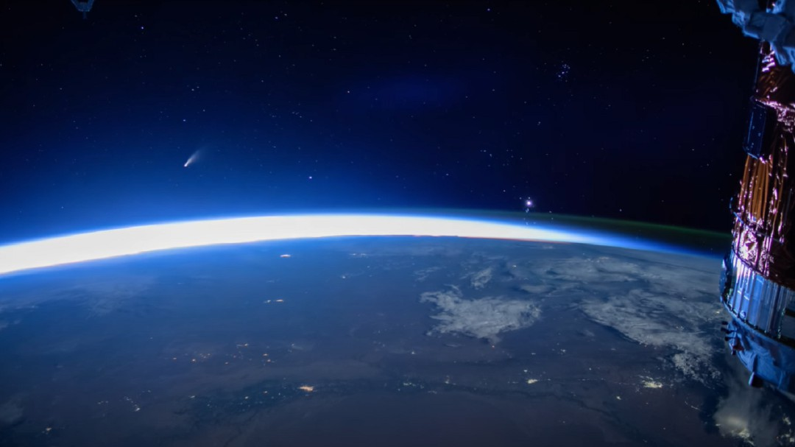
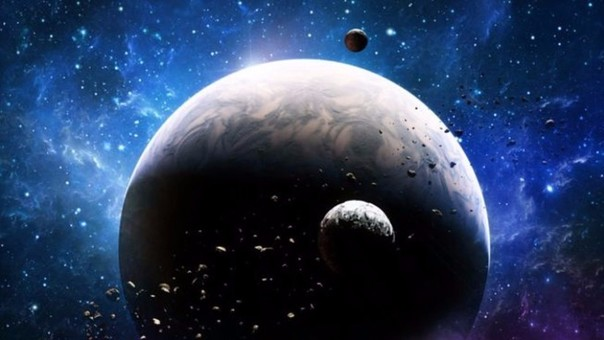
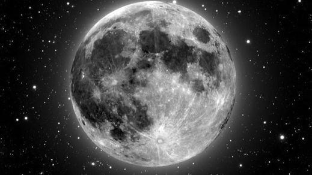

-
Así se ve el cometa Neowise desde el espacio durante su acercamiento a la Tierra
 Hace ya varios meses concretamente el pasado mes de marzo, la NASA registraba un cometa nunca antes detectado por los investigadores que, horas más tarde, sería bautizado como C/2020 F3
-
VIDEO: este es el misterioso sonido del fondo del espacio
La NASA publicó un archivos de audios con sonidos del espacio y anunció que enviará micrófonos a Marte.
-
Hallan un monstruoso agujero negro de 1.500 millones de masas solares poco después del Big Bang
 Según las teorías actuales, algo así no habría tenido tiempo de formarse tan poco tiempo después de la gran explosión que dio origen al Universo
Según las teorías actuales, algo así no habría tenido tiempo de formarse tan poco tiempo después de la gran explosión que dio origen al Universo -
Según las teorías actuales, algo así no habría tenido tiempo de formarse tan poco tiempo después de la gran explosión que dio origen al Universo
China se había estado preparando años para esta operación particularmente difícil desde un punto de vista tecnológico en la cara oculta de la luna.